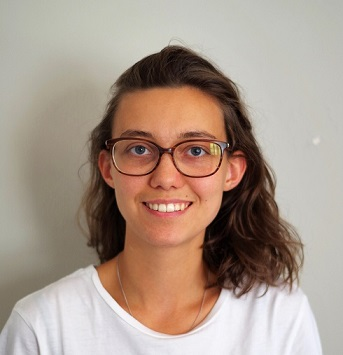

Marjolaine de Sury - CV

Etudiante à Audencia Business School, je suis à la recherche d'un stage de fin d'étude en marketing digital à partir de janvier 2022. Je suis particulièrement intéressée par les réseaux sociaux et les médias.
Formation
AUDENCIA BUSINESS SCHOOL, Nantes
Master en Marketing digital, programme grande école
Cours dispensés intégralement en anglais
Option digitale : apprentissage de l’user flow, wireframe, prototype et mockup d’un site et d’une application
Audencia master marketing à l'ère du digital
CLASSE PREPARATOIRE ECS, Clermont-Ferrand
Classe préparatoire économique, option scientifique : cours intensifs de mathématiques et géopolitique
BACCALAUREAT SCIENTIFIQUE, Clermont-Ferrand
Mention européenne, spécialisation mathématiques, mention très bien
Expériences professionnelles
Assistante au Service Média - juillet-décembre 2020
Henkel, Boulogne-Billancourt
Le service média est chargé de toutes les activations média des trois branches du groupe : lessives et soin de la maison, cosmétiques et colles.
- Suivi quotidien du bon déroulement des activations média
- Participation à la définition du plan média (objectifs, stratégie, choix média, mise en place, suivi des KPI’s)
- Gestion administrative des budgets média (devis, commande, outils de pilotage media)
Henkel
Chef de Projet Brand Content et Réseaux Sociaux - janvier-juin 2020
France tv Publicité, Boulogne-Billancourt
Le Lab est la cellule créative de France tv publicité, en charge des opérations spéciales.
- Gestion opérationnelle et de planification des activations sur les réseaux sociaux France Télévision et sur le média Brut.
- Travailler sur les propositions commerciales
- Assurer la mise en place et le suivi des opérations
- Assister les responsables de projets dans la création de dispositifs cross média pour les annonceurs TV et digitaux
- Être en relation avec les différents pôles commerciaux de la régie publicitaire ainsi qu'avec les partenaires : éditeurs (chaînes du groupe France tv), producteurs d'émissions, prestataires techniques
- Gérer la relation client
- Faire des bilans de campagne publicitaire et les optimiser pour répondre aux engagements envers le client
FTP- Le Lab
Brut.
Expériences associatives
Mission humanitaire au Népal : mission de deux mois avec une association étudiante d'Audencia
Bureau des Arts d'Audencia : participation à l'organisation de concerts, et participation à la comédie musicale en tant que violoniste
Centres d'intérêt
Musique : violon, orchestre et solfège pendant 10 ans au Conservatoire Régional de Clermont-Ferrand; participation à la comédie musicale d'Audencia
Arts-plastiques, théâtre, photographie
Voyages